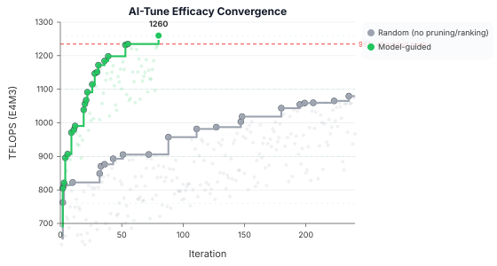
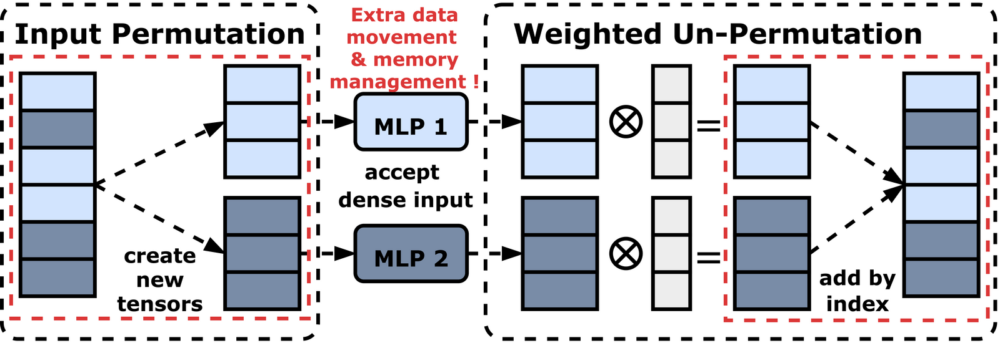
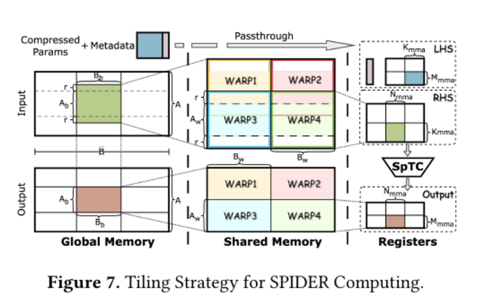
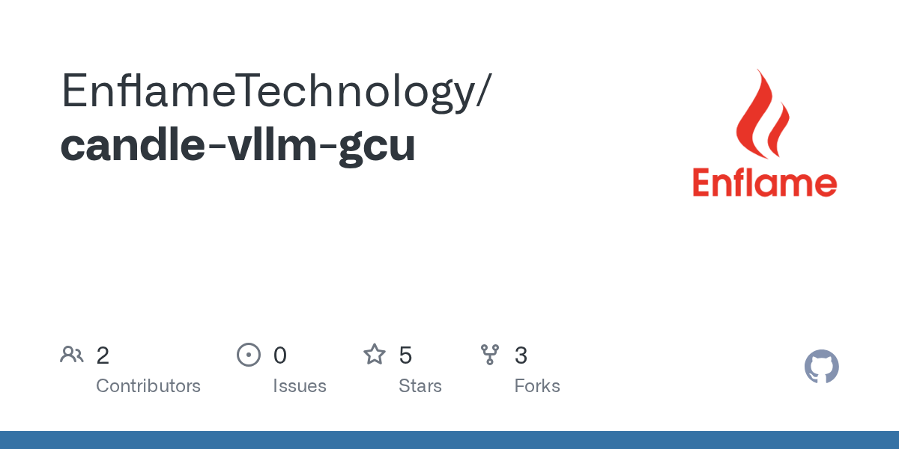

2026
SPIDER: Unleashing Sparse Tensor Cores for Stencil Computation via Strided Swapping
I am Principal Engineer / Chief Researcher in the Research Academy at Enflame Tech, where I work on compilers, runtimes, kernel programming models, and the system software layers needed to make AI computing practical on modern accelerators.
我目前在 燧原科技 研究院担任主任工程师 / 首席研究员，主要工作围绕编译器、运行时、计算内核编程模型，以及支撑现代 AI 加速器落地的系统软件层展开。
Most of my work is around high-performance software for AI, especially the junction of languages, compilers, runtimes, and system abstractions for accelerators. I care about designs that keep low-level control without making the software stack harder to evolve.
我的工作大多围绕面向 AI 的高性能软件展开，尤其关心语言、编译器、运行时，以及面向加速器的系统抽象之间的交界面。我在意的是，怎样在保留底层控制力的同时，不把整套软件栈做得越来越难演进。
That shows up in several public projects. CroqTile turns ideas around TileFlow and DMA into a language, autotuning workflow, and toolchain for kernel development. On the systems side, work such as Samoyeds and SPIDER looks at sparse and accelerator-oriented execution from different angles, while my Rust-based serving infrastructure work around Candle and candle-vLLM style execution on Enflame GCU brings the same concerns into full-stack LLM systems.
这些想法也落在几类公开项目里。语言这一侧，CroqTile 把围绕 TileFlow 和 DMA 的想法落成了语言、自动调优流程和 kernel 开发工具链。系统这一侧， Samoyeds 和 SPIDER 分别从不同角度处理稀疏和面向加速器执行的问题；而围绕 Candle、candle-vLLM 风格执行与 Enflame GCU 的 Rust 推理基础设施，则把同样的关注点延伸到全栈大模型系统里。
Dr. Heng Shi received his Ph.D. from the University of Bath, after undergraduate study in computer science at Tsinghua University.
石恒于 2018 年毕业于英国巴斯大学电子与电气工程系并获得博士学位，2013 年获得清华大学计算机科学与技术系学士学位。
He worked at Enflame as a Senior Algorithm Engineer and later as a Software Architect from 2018 to 2022, and has led research work as Principal Engineer / Chief Researcher since 2022, focusing on AI system stacks, performance optimization, and tooling design. He has published over 20 papers and received more than 1800 citations overall, with work presented at venues including EuroSys, PPoPP, CGO, and ASE. His recent public work includes the CroqTile language and toolchain, Samoyeds at EuroSys 2025, SPIDER at PPoPP 2026, and related work on AI compilers, sparse acceleration, and systems for LLM serving. Earlier work spans forecasting and energy systems, while related community-facing efforts include participation in MLCommons / MLPerf and AIIA.
石恒曾于 2018 年至 2022 年在燧原科技担任资深算法工程师、软件架构师，自 2022 年起担任主任工程师 / 首席研究员并开始带领研究团队，主要围绕 AI 系统栈的性能优化与工具链设计展开工作。他已累计发表论文 20 余篇，总引用超过 1800 次，相关工作发表于多个人工智能与计算机系统方向的重要会议。近年的公开工作包括 CroqTile 语言与工具链、EuroSys 2025 的 Samoyeds、PPoPP 2026 的 SPIDER，以及围绕 AI 编译器、稀疏加速与大模型服务系统的相关研究；更早期的工作则覆盖预测与能源系统方向，同时也参与了 MLCommons / MLPerf 和 AIIA 的相关社区工作。
Selected public updates from releases, papers, and open project records.
这里只保留公开可验证的近况条目，不做完整罗列。
CroqTile v1.0.4 pre-beta was posted on the official changelog, continuing the public rollout of the language and compiler toolchain.
CroqTile 官方更新日志发布了 v1.0.4 pre-beta，继续推进这套语言与编译工具链的公开演进。
The public CroqTile website, language repository, and tuner repository continue to make the language and tooling stack inspectable in the open.
公开的 CroqTile 网站、 语言仓库 和 调优器仓库 持续让这套语言与工具链以可检查的方式对外开放。
SPIDER: Unleashing Sparse Tensor Cores for Stencil Computation via Strided Swapping was published at PPoPP 2026.
SPIDER: Unleashing Sparse Tensor Cores for Stencil Computation via Strided Swapping 发表在 PPoPP 2026。
CroqTile v1.0.3 Open Source Base marked the public open-source release of the base language stack.
CroqTile v1.0.3 Open Source Base 完成了基础语言栈的公开开源发布。
Samoyeds was published at EuroSys 2025, presenting sparse-tensor-core acceleration for MoE models with structured sparsity.
Samoyeds 发表在 EuroSys 2025，聚焦利用结构化稀疏和 Sparse Tensor Core 加速 MoE 模型。
Public repositories around candle-gcu and candle-vllm-gcu document ongoing Rust-based LLM serving work on Enflame GCU.
围绕 candle-gcu 和 candle-vllm-gcu 的公开仓库，记录了基于 Rust 的 Enflame GCU 大模型服务系统持续推进情况。
Continued participation in MLCommons / MLPerf and AIIA has kept part of the work connected to public benchmarking and industry-standard discussions.
持续参与 MLCommons / MLPerf 与 AIIA 相关工作，也让一部分研究和工程经验持续连接到公开评测与产业标准讨论中。
Recent papers center on compilers, sparse inference, and AI systems, with earlier work in forecasting and energy systems.
近年的论文主要收束在编译基础设施、稀疏推理与 AI 系统，更早的工作则延伸到预测与能源系统。
SPIDER: Unleashing Sparse Tensor Cores for Stencil Computation via Strided Swapping
Do We Need Tensor Cores for Stencil Computations?
Samoyeds: Accelerating MoE Models with Structured Sparsity Leveraging Sparse Tensor Cores
SPTCStencil: Unleashing Sparse Tensor Cores for Stencil Computation via Strided Swap
Postiz: Extending Post-increment Addressing for Loop Optimization and Code Size Reduction
UFront: Toward a Unified MLIR Frontend for Deep Learning
SPHINX: Search Space-Pruning Heterogeneous Task Scheduling for Deep Neural Networks
Review of the opportunities and challenges to accelerate mass-scale application of smart grids with large-language models
Decentralized home energy management system to reduce system peak and uncertainty
Boost Linear Algebra Computation Performance via Efficient VNNI Utilization
Deep learning for day-ahead electricity price forecasting
A statistical approach to estimate imbalance-induced energy losses for data-scarce low voltage networks
Data-driven uncertainty quantification and characterization for household energy demand across multiple time-scales
Probabilistic network pricing considering demand uncertainty in distribution systems
Uncertainty Analysis and Application on Smart Homes and Smart Grids: Big Data Approaches
Decentralised control for combined heat and power system in energy community
Deep Learning for household load forecasting-A novel pooling deep RNN
A whole system assessment of novel deep learning approach on short-term load forecasting
Assessment of relative efficiency of differing energy markets for community energy
Decentrailised control for combined heat and power system in energy community
Evaluation of fault levels and power supply network impedances in 230/400 V 50 Hz generic distribution systems
The use of thaumatin and bovine serum albumin as proteins in model wine solutions in bentonite fining
Demand Side Response Performance Assessment: An Impact Analysis of Load Profile Accuracy on DSR Performances
Combining mobile and fog computing: Using coap to link mobile device clouds with fog computing
Coordinated charging of plug-in electric vehicles in charging stations
SPTCStencil: Using Sparse Tensor Cores for Stencil Computation
Selected systems and research artifacts from recent years.
近年的代表性系统与研究工件。




A Rust-based serving stack around Candle and candle-vLLM on Enflame GCU, covering fused ops, quantization, multi-GCU inference, GGUF support, and memory-system work.
围绕 Candle 与 candle-vLLM 在 Enflame GCU 上构建的一整套 Rust 推理栈，涵盖融合算子、量化、多卡推理、GGUF 支持与内存系统优化。
Selected positions and education.
主要工作经历与教育背景。
Principal Engineer / Chief Researcher
Working on AI framework and systems research in the Research Academy, with a focus on compilers, runtimes, kernel programming models, and related research projects.
在燧原研究院从事 AI 框架与系统研究，主要围绕编译器、运行时、计算内核的编程抽象，以及相关项目的推进。
Software Architect
Led software architecture and technical planning across AI frameworks and system software, while also supporting technical evaluation and team building.
负责 AI 框架与系统软件的架构设计和技术规划，也参与团队建设与技术评估。
Senior Algorithm Research Engineer
Worked on early-stage research across auto-parallelism, MLIR-related compiler work, benchmarking, and heterogeneous AI software systems.
参与自动并行、MLIR 编译基础设施、基准评测与异构 AI 软件系统等方向的前期研究。
Ph.D. / Assistant Researcher
Doctoral work on smart grids, load forecasting, and energy systems, alongside research and project work at the University of Bath.
在巴斯大学读博期间，研究主要围绕智能电网、负荷预测与能源系统展开，同时参与相关科研与项目工作。
B.Sc.
Undergraduate study in computer science, with early work touching nonlinear optimization and AGV swarm scheduling.
本科阶段在清华大学学习，早期工作涉及非线性优化与 AGV 集群调度。